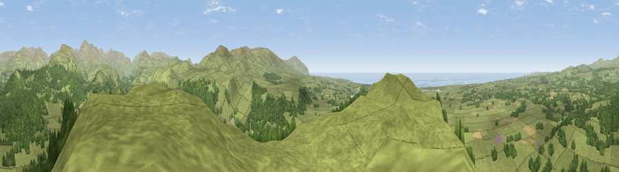

Muncaster Fell
#830 in England · top 9% of its area beats it · near Santon BridgeThe view, rendered

A 360° render of this exact spot computed from the terrain model, tree cover and land cover — summer colours, afternoon light, calibrated against photographs of famous viewpoints. Real trees, hedges and buildings will differ in detail.
The panorama
Grey silhouette: terrain skyline in each direction (720 bearings, Earth curvature and refraction included). Dashed green: skyline with trees (+15 m) and buildings (+8 m) as obstacles. Blue strip: how far the ground is visible on each bearing.
Where the view opens
Wedge length = distance to the farthest visible ground on that bearing (vegetation-aware). Rings at 10, 25 and 50 km.
What fills the view
81% grassland · 15% woodland · 2% water · 1% cropland
Angular shares of the visible panorama (visual magnitude), not map area. Landscape diversity 0.27 (0–1 Shannon).
Key numbers
More beautiful places nearby
The staircase of upgrades: each row has a higher view potential than everything closer. Driving times are estimates from straight-line distance, calibrated against real road routing — check an actual route before setting out.
| Place | Direction | Drive | Score |
|---|---|---|---|
| Hooker Crag | SW · 0 km | ~2 min | 84.8 |
| Whin Rigg | NE · 6 km | ~13 min | 87.5 |
| Viewpoint near Boot | NE · 8 km | ~15 min | 88.9 |
| Crag Fell | N · 16 km | ~28 min | 89.1 |
| Viewpoint near Finsthwaite | ESE · 29 km | ~46 min | 90.3 |
| The Knoll | S · 413 km | ~392 min | 91.0 |
54.37587, -3.36278 · source: dobih hill · position refined by local search. Computed location — check access rights before visiting.